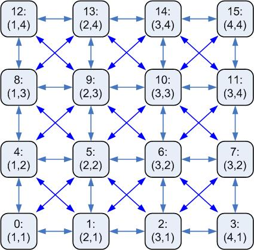

Note: The following documentation is for Agilla 2.x. Agilla 3.x and beyond (the version available off the SourceForge CVS server) does not enforce the grid topology. For the Agilla 1.x, click here.
Agilla creates an artificial multi-hop sensor network arranged in an n x m grid by filtering out messages from non-neighbors. A node can only communicate with its immediate neighbors based on the grid topology, i.e., each node in the grid can communicate with its immediate horizontal, vertical, and diagonal neighbors, for a maximum of 8 neighbors. A node is identified by its (x,y) location, which is calculated based on its address. Only one node can be located at a particular (x,y) location at a time. The network grid is arranged in row-major order starting with location (1,1) at the corner. The mote connected to the base station is treated like a regular node, it can be at any valid grid location and its neighbors are based on its position in the grid. Note that this differs from Agilla 1.x where the base station was treated as a special case with an address of (0,0) and the entire first row as its immediate neighbors. In Agilla 2.x, the base station can move and is treated like any other node.
The grid location and node address is calculated as follows:
ID = (x - 1)+ (y - 1) * (number of columns)
Alternatively, given the node ID, its location can be calculated as follows:
x = [(ID) mod (number of columns)]
+ 1
y = (ID – x + 1)/(number of columns) + 1
For example, in a 4x4 network, the nodes would have the following
IDs and locations:

Agilla implements a simple greedy-forwarding where each agent simply looks at its neighbors and forwards a message to whichever neighbor is closer to the ultimate destination. If there are no neighbors closer to the destination than the node itself, the migration and tuple space access operation will fail. It does not adopt to node failure or perform neighbor discovery.
The default grid size is specified by the number of columns. It is specified by DEFAULT_NUM_COLUMNS in <agilla>/types/Agilla.h and by NUM_COLUMNS in <java>/edu/wustl/mobilab/agilla/variables/AgillaLocation.java. After changing the default number of columns, the java AgentInjector application and the NesC both have to be recompiled. The NesC code has to be reinstalled on all motes.
To install the NesC portion of Agilla, you can use an included gawk script that streamlines the installation process. Use it by going to <agilla> and typing gawk -f installer_m2.awk for Mica2 motes, or gawk -f installer_mz.awk for MicaZ motes. Alternatively, if you added the Agilla aliases to your /etc/profile, just type riall_m2 or riall_mz anywhere for Mica2 and MicaZ motes, respectively.
To recompile the Java portion, type mj if you have the Agilla aliases setup, or go to <java>/edu/wustl/mobilab/agilla/variables/ and type make.
Agilla 2.x allows you to change the grid topology and a node's location wirelessly. You can start the AgentInjector with a "-col NUM_COL" option, which will change the default number of columns within the AgentInjector. You can change the number of columns within the sensor network by going to the WSN menu and selecting ""Change Grid Topology," or by hitting ctrl+g. To change a node's location. Note that the grid size within the network MUST match the grid size within the AgentInjector java application.